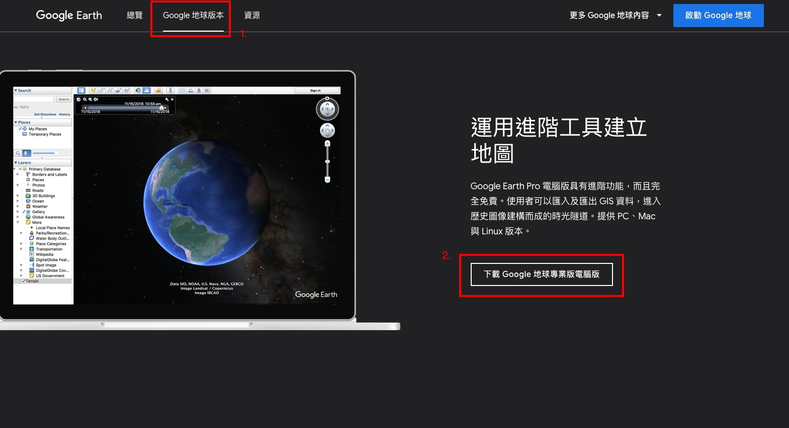
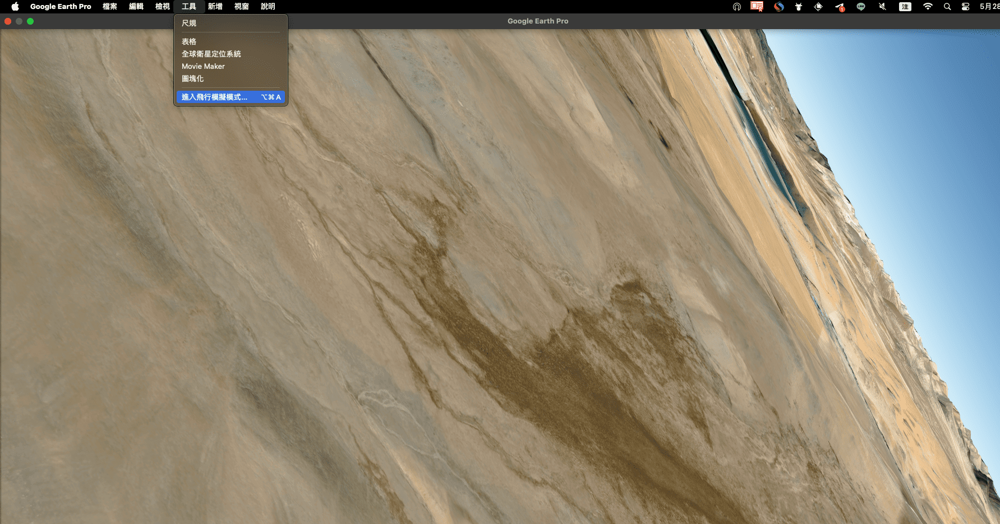
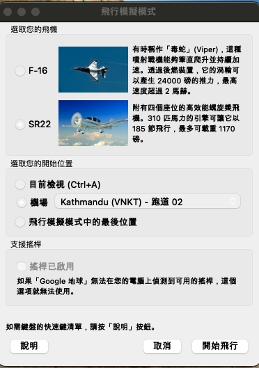
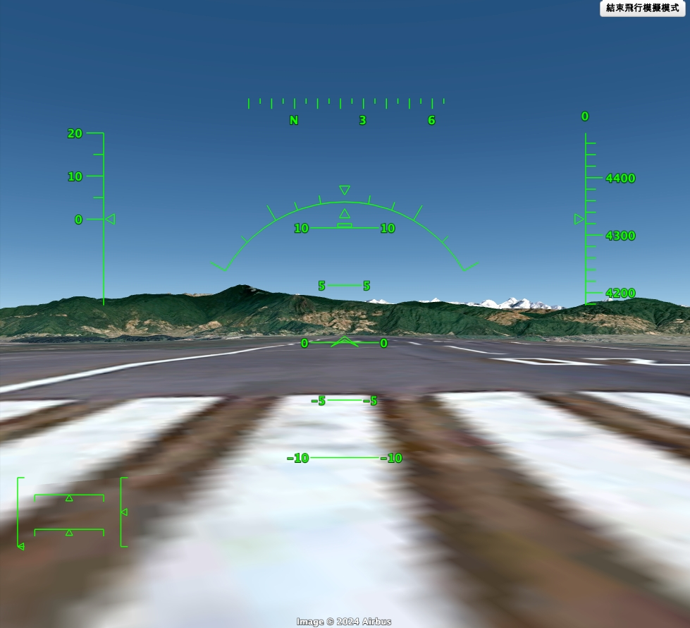
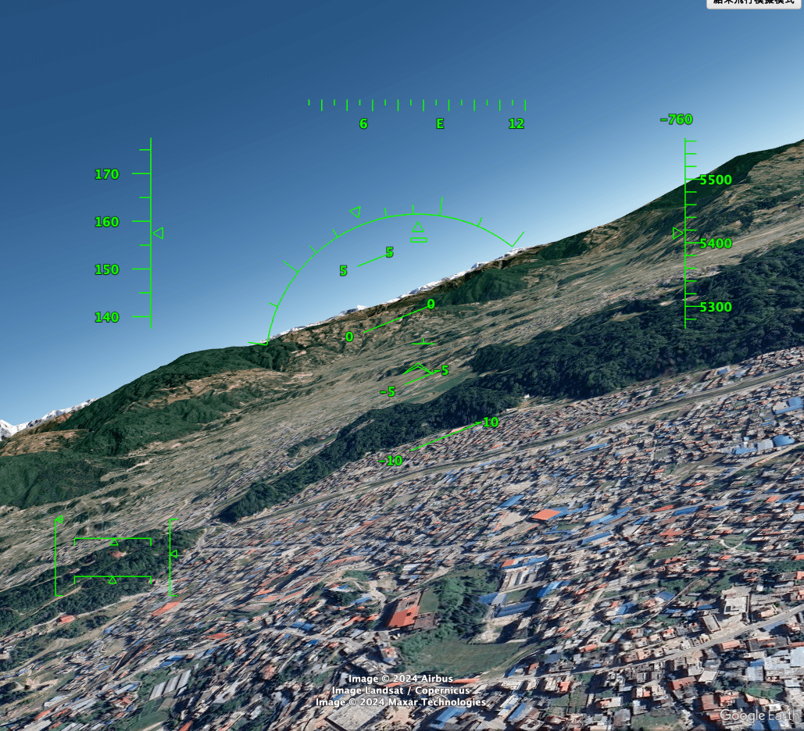
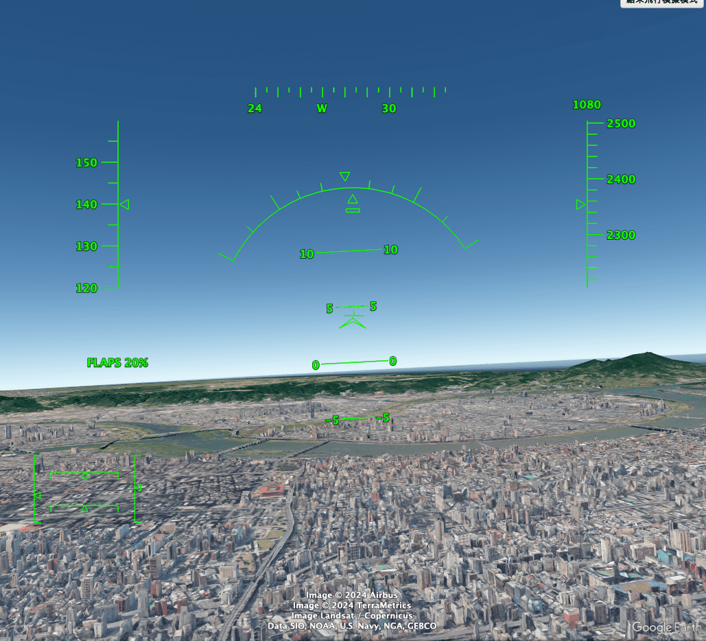

Google 地球飛行模式
前言
偶然之間，再玩 google 地球的時候發現可以開飛機!!!，沒聽錯，不僅僅免費而且還有兩種機型可以選擇，讓我們來看看怎麼使用吧…
安裝
目前這功能只有應用程式版．網頁版還沒辦法，那我們現在就來安裝吧
我們先到 google 地球的 首頁 上方 Google 地球版本，下載 Google Earth Pro 電腦版

開始遊戲
完成安裝後點開，再上方工具列選擇 “工具” 接者點選 “進入飛行模擬模式”

進入後有兩種飛機的型號可以選擇，飛機選擇完後選擇起飛的機場，就可以開始飛行了
這邊官方給的建議
如果您是新手飛行員，請使用 SR22 來學習如何飛行。
如果您是經驗豐富的飛行員，請使用 F-16 來筆直爬升並持續推進。

操作說明
起飛
- 按下 Page Up 鍵，飛機就會開始在跑道上滑行。
- 滑鼠在中間稍微向下移動，飛機就會慢慢起飛

改變方向
使用箭頭左右來鍵改變飛機方向，但是轉彎的幅度不能太大，不然容易墜機
改變視野
- 箭頭鍵 + Alt 鍵 (慢慢轉動)
- 箭頭鍵 + Ctrl 鍵 (快速轉動)
看看遊戲畫面

